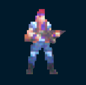

Olho de ouro
Criadores:
Bryan
Camilo Augusto
Larissa
Lucas Philippe
Rafael
Olho de ouro é um jogo shoot n run infinito de scores criado na plataforma Unity.
A história do jogo é sobre o protagonista John, um veterano de guerra tentando conseguir alguma paz em sua vida com sua esposa, Martha.
Estava conseguindo até que uma gangue de terrorista invade sua casa e mata sua esposa, enquanto ele estava fora. Furioso, John decide voltar à ativa.
Agarra seu equipamento aposentado e corre atrás dos bandidos pelo sistema de esgoto da cidade.
o jogo pode ser jogado abaixo

link para jogar o jogo em tela cheia